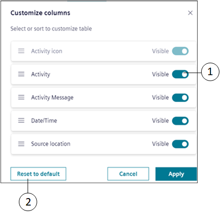
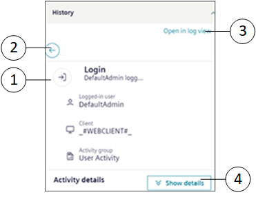

Log Viewer Workspace
The Log Viewer application is present in Application View > Log Viewer in the System Browser.
The Log Viewer tab displays the log records in the Master pane and details of the selected log entry in the Detailed pane.
|
1 | System Browser | Displays the list of objects in the selected view. |
2 | Search bar | Displays the type of filters such as Event list, Activity, Action result, and Date/Time in drop-down list. You can apply filters either by clicking on the search icon, or by clicking Enter key from the keyboard. |
3 | Master pane | Displays the list of log records sorted in descending order according to the date and time entries in the Date/Time column. |
4 | Search | Applies the selected filter. |
5 | Discard changes | Discards the changes done for the selected log view definition and brings it to original state saved on server. |
6 | Save filter | Creates a new Log View Definition for selected filters. |
7 | | Shows the following option: |
8 | Detailed pane | Displays the details of the selected log entry in the Master pane. By default, the first log entry displays in the Detailed pane. Move the splitter position between Master and Detailed pane to adjust the representation of columns in the tabular view. |
9 | Show details | Shows the activity details of the log entry displayed in the Detailed pane. |
Customize Columns
NOTE: Customize columns is not applicable for small screen devices.

|
1 | | Toggle to display or hide columns. By default, the Activity icon column is always visible. |
2 | Reset to default | Resets the default column settings. |
Filter Log Entries
|
1 | Search bar | Displays the options according to which you can filter the displayed output (for example, Action result, Event list, Activity, Date/Time and so on). |
2 | | Clears the filter options. |
Log Viewer - Right Panel
|
1 | Master pane | Displays the list of log entries (activities or events) sorted in descending order. |
2 | Right panel | Displays the relevant applications and the Log Viewer related items. |
3 | or | Expands and collapse the right panel. |
4 | History | Displays the history of selected log entry in Master pane (for example, activities or events that include at least one log record). |
Log Viewer - Properties Workspace
|
1 | Log Entry Items | Displays the total number of log entries in Master pane. |
2 | | Toggle to Basic or Advanced options. By default, the Basic is selected. |
3 | View Size | Allows you to edit the View Size of log entries in Master pane. |

|
1 | History (In Installed Client it is referred as Detailed logs) | Displays more details of selected log entry. |
2 | Back | Hides the detailed history window |
3 | Open in log view | Open in log view > Master pane. Displays the record of log entries with the Source Location column for the selected object or event. |
4 | Show details | Displays the activity details, expand to view the details |